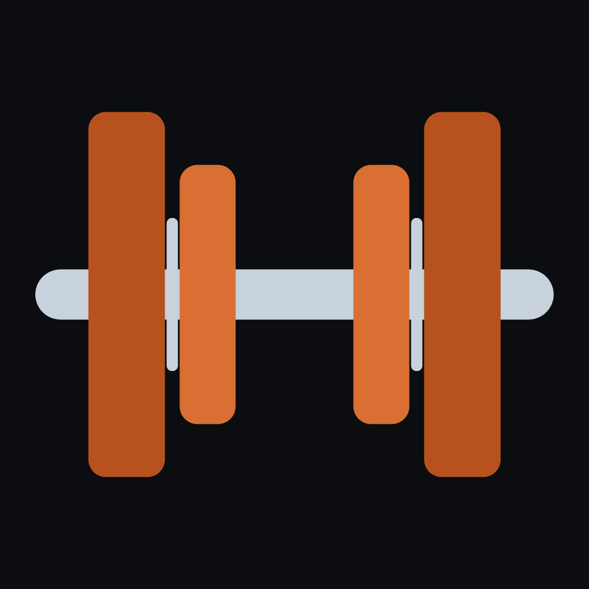
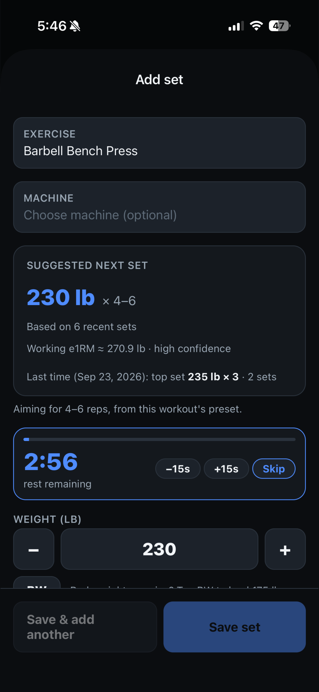
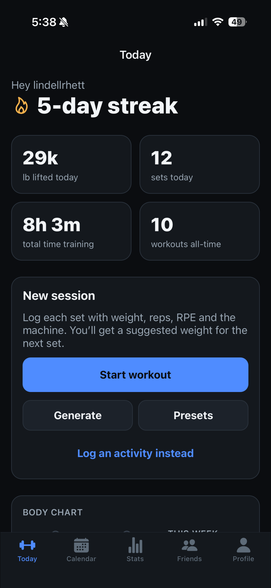
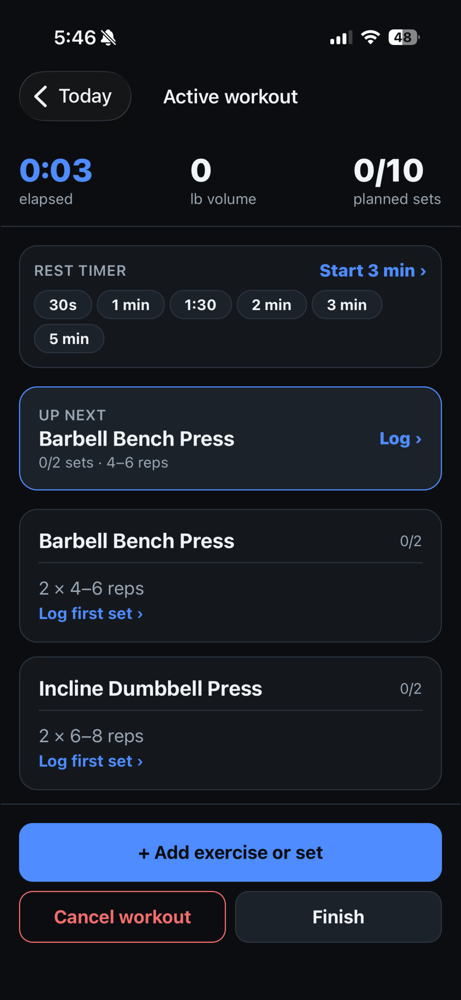
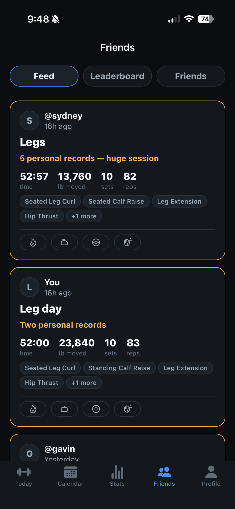
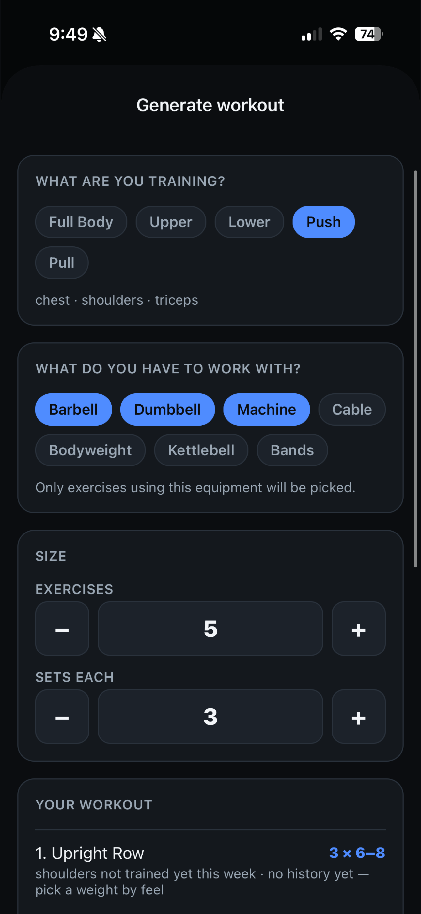

Rust Strength
A workout tracker for iPhone that tells you what weight to put on the bar for your next set. It learns from your recent training, tells your gym's machines apart, and keeps working with no signal.
- Role: solo developer
- Status: submitted to the App Store after TestFlight beta testing
- Built: September 2026
- Tests: 519 unit tests





What it does
Training
- Suggests the weight for your next set, aimed at your rep range.
- Learns the conversion between differently labeled machines.
- Handles weighted, bodyweight, assisted, and timed-hold exercises, with a built-in hold timer.
- Rest timer with a lock-screen notification.
- Presets, a workout generator, and a review screen for fixing mistakes.
Progress and friends
- Streaks, 30-day consistency, volume, time trained, and personal records.
- Progress charts, a weekly body chart, levels, and badges.
- A friends feed with reactions, and a leaderboard across five metrics.
- Offline logging that syncs later, a data export, and account deletion.
How it works
The recommendation algorithm
- Estimate strength per set. How hard the set felt (RPE) becomes reps left in reserve. The Epley formula then turns weight and reps into an estimated one-rep max.
- Smooth it. An exponential moving average over the last six working sets keeps one odd day from swinging the result.
- Pick the load. It runs the formula backwards for your target reps, caps the change at 15% from last time, and rounds to what the machine can actually load.
Learning your gym's machines
Two cable stacks can be labeled completely differently: 50 lb on one might be 100 lb on another. The app pairs sessions of the same exercise on two machines done within 14 days of each other. It takes the median ratio across the most recent pairs, then converts history before suggesting a weight.
Each session is matched only to its closest counterpart. Otherwise, getting stronger over a month would be mistaken for a difference between the machines.
Security in the database
Every table has PostgreSQL Row Level Security, so the database refuses anyone else's data whatever the app sends. Social features go through SQL functions that check friendship, the sharing setting, and blocks before returning anything, and they return summaries only.
A pre-launch review found that reaction rows exposed who reacted, even though the app only showed counts. I tightened the policy so the database enforces what the privacy policy promises.
Offline-first sync
The TanStack Query cache is saved on the device, and writes are queued in order and replayed when the connection returns. Sets logged in a basement with no signal are never lost, and the app opens straight to your data.
Problems I solved
- "Workout not found" after an hour away. The auth token had expired while the app was in the background, so data requests went out with the public key alone, and Row Level Security correctly returned nothing. I added a fetch guard that holds those requests until the session refreshes, and retries them with backoff.
- A friend's workout time showing 23 hours instead of 2. A SQL query joined sets before adding up session lengths, so each workout was counted once per set. I split the aggregates into separate lateral joins.
- Users unable to verify their email. Some email security filters open links to scan them, which can use up a single-use confirmation link before the user taps it. I switched sign-up and password reset to 6-digit codes.
- Mistaking progress for a machine difference. My first machine-ratio model paired a new personal record with an older session on the other machine. I fixed it with mutual-nearest pairing inside a time window, and added tests for it.
Tech stack
| App | TypeScript, React Native 0.86, React 19, Expo SDK 57, Expo Router |
|---|---|
| Data and sync | TanStack Query v5 with a persisted cache and queued offline writes, supabase-js |
| Backend | Supabase: PostgreSQL, Auth, Row Level Security, SQL functions (14 migrations) |
| Validation and UI | React Hook Form, Zod, react-native-svg |
| Quality | Jest and ts-jest (519 tests), ESLint, strict TypeScript |
| Release | EAS Build and Submit, TestFlight, App Store Connect, GitHub Pages |
My role
I built Rust Strength on my own:
- Product: chose the features, designed the screens, and worked through beta feedback.
- Backend: designed the Postgres schema, security policies, and SQL functions.
- Algorithms: built the recommendation and machine-conversion logic, with tests.
- Launch: ran the TestFlight beta and the App Store submission.
- Legal and privacy: wrote the privacy policy and terms, and built the data export and account deletion.